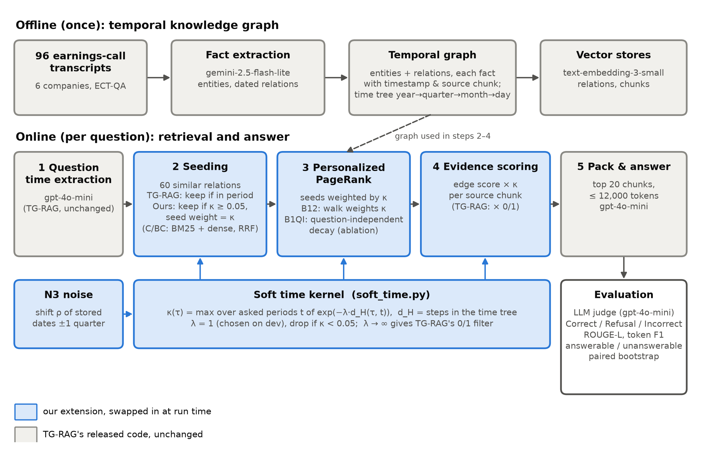
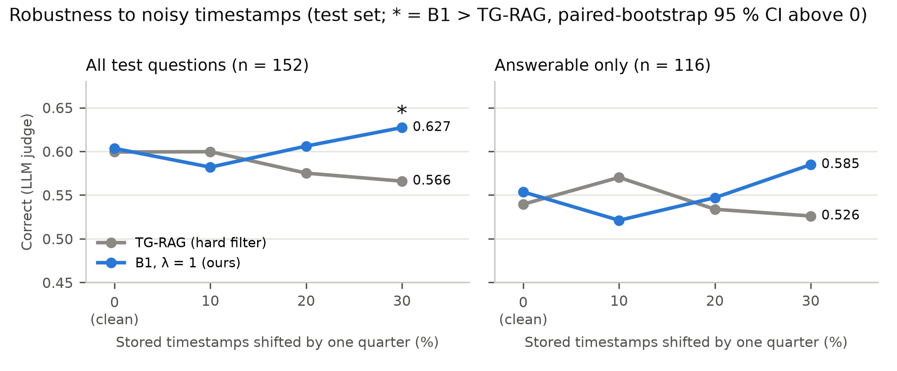
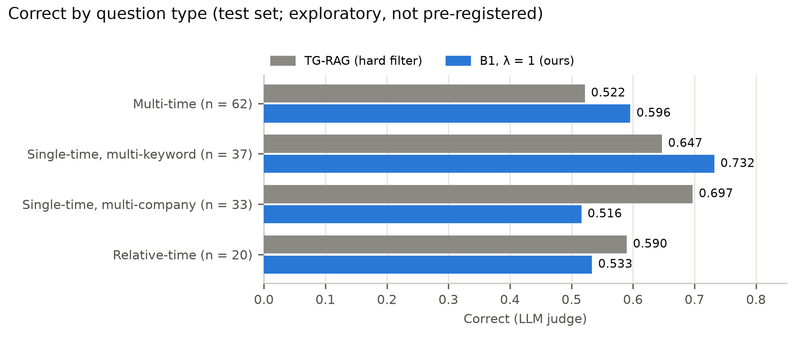
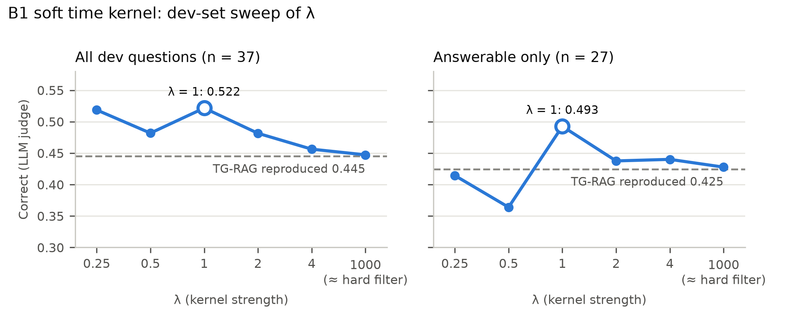

Overview
Questions about company results always name a period: "What was EOG Resources' free cash flow in 2021-Q4?" Temporal graph retrieval answers them by storing every extracted fact with a timestamp and keeping only the facts dated inside the asked period. This project asks whether that strict 0/1 rule can be replaced by a soft, question-aware time weight, and tests the idea under a protocol fixed before the test set was run.
Problem
The baseline method (TG-RAG) uses a hard filter, and its timestamps are written by a language model while the graph is built. In our graph, 832 of 8,408 stored facts (9.9%) carry a timestamp that is not even a valid calendar form, such as "2023 QQ3", "Q1 2023" or "LAST YEAR". A fact from the neighbouring quarter is also dropped even when nothing from the exact quarter exists. In one development question, none of the 60 most similar candidates carried the asked quarter, so the baseline kept no evidence at all and the model invented three numbers.
Method
We measure the distance dH between a fact's timestamp and the asked period in a year → quarter → month → day tree: zero inside the period, two steps to a neighbouring quarter of the same year, four across a year boundary. The fact's weight is
As λ → ∞ the weight becomes the original 0/1 filter, so the baseline is a special case. The weight is used in three places:
- Seeding: each entity's restart weight in personalized PageRank is the largest κ of its candidate facts.
- The walk (variant B12): edge weights follow κ, compared against a question-independent decay in the style of DyG-RAG (B1QI).
- Evidence scoring: each fact adds κ · [π(u) + π(v)] to its source chunk's score.
A supporting variant fuses BM25 and dense rankings per asked period with Reciprocal Rank Fusion. A robustness test shifts 10–30% of stored timestamps by one quarter, using a deterministic hash so every method sees the same noise.

Results
152 test questions (116 answerable, 36 unanswerable). Correct is the score from an element-level LLM judge; Δ comes from a paired bootstrap against the reproduced baseline (1,000 resamples).
| Method | Correct (all) | Answerable | Unanswerable | Δ all [95% CI] |
|---|---|---|---|---|
| TG-RAG, reproduced (hard filter) | 0.599 | 0.540 | 0.792 | – |
| Naive RAG | 0.548 | 0.426 | 0.944 | −0.051 [−0.126, +0.025] |
| Soft kernel, λ = 1 (B1) | 0.603 | 0.554 | 0.764 | +0.004 [−0.049, +0.059] |
| Soft kernel + walk (B12) | 0.605 | 0.555 | 0.764 | +0.005 [−0.050, +0.069] |
| Question-independent decay (B1QI) | 0.605 | 0.547 | 0.792 | +0.006 [−0.049, +0.064] |
| Hybrid seeding, hard filter (C) | 0.561 | 0.468 | 0.861 | −0.038 [−0.094, +0.020] |
| B12 + hybrid seeding (BC) | 0.626 | 0.522 | 0.958 | +0.026 [−0.039, +0.094] |
The main claim is not supported: the soft kernel ties with the baseline on held-out questions. It changes the retrieved evidence on 110 of 116 answerable questions, helping multi-period questions and hurting single-period, multi-company ones, and the two effects cancel out. Question-aware decay was no better than question-independent decay.
Robustness to wrong timestamps

Where the methods differ

Choosing λ on the development set

Proof of implementation
- Verified baseline: our re-implementation selects the same chunks as the released code on 36 of 37 dev questions, and the kernel with λ = 1000 scores 0.447 against 0.445 for the baseline.
- Complete runs: all 13 pre-registered test runs finished with 152 answers each and no errors, giving 1,976 judged answers.
- Tests: 24 unit tests pass, including one that checks our baseline returns exactly the base method's chunks on a synthetic graph.
- Traceable results: every number in the tables has its exact command in results/SUMMARY.md.
Demo output (dev question base-6, recorded)
Periods read from the question: "2021-Q4" stored date sim TG-RAG soft kappa 2022-Q1 0.800 0 DROP 0.0183 DROP 2021-Q3 0.799 0 DROP 0.1353 2021-Q1 0.788 0 DROP 0.1353 2021-Q2 0.783 0 DROP 0.1353 2020 0.778 0 DROP 0.0498 DROP Facts kept as seeds: TG-RAG 0 of 60, soft kernel 13 of 60 Answer, TG-RAG: three invented figures (judge Correct 0.00) Answer, soft kernel: "2021-Q4: $2 billion", other quarters not available (judge Correct 0.33)
Project progress
| Stage | Status |
|---|---|
| Data subset and dev/test split (6 companies, 37/152 questions) | done |
| Temporal knowledge graph built (96 transcripts) | done |
| Baseline reproduced and verified (36/37 same evidence) | done |
| Soft kernel, kernel in the walk, question-independent ablation, hybrid seeding, noise protocol | done |
| Evaluation pipeline (judge, ROUGE-L, F1, paired bootstrap) | done |
| Development experiments and λ selection | done |
| Pre-registered test runs (13 × 152 answers) and analysis | done |
| Figures, tables, paper drafts and thesis | done |
| Human check of 50 judged answers and 100 stored timestamps | sheets prepared; verdicts pending |
| Journal submission | manuscript complete; not yet submitted |
Reproduce
git clone https://github.com/Shashvath11/Soft-Temporal-Kernel-Graph-Retrieval.git git clone https://github.com/hanjiale/Temporal-GraphRAG.git third_party/TG-RAG pip install -r requirements.txt python -m pytest -q tests python scripts/run_ectqa.py --working_dir graph_subset --questions ect-qa/subset/test.jsonl --variant B1 --lam 1 --out runs/test_B1_lam1.jsonl
Full instructions are in the README.